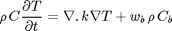
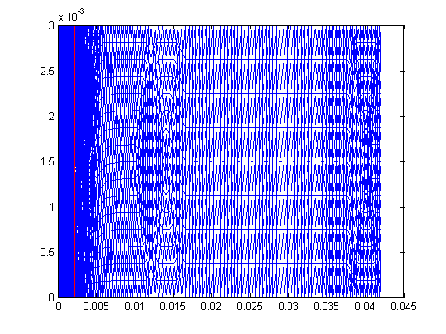
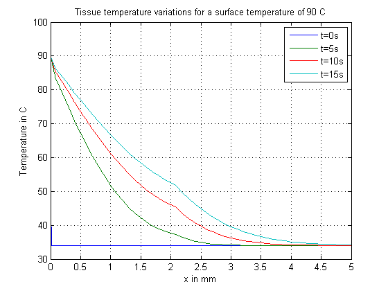
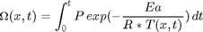
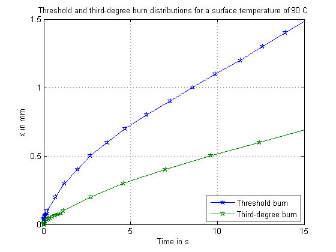

Contents
Solve bioheat equation to study skin burn process
Introduction

Pennes' bioheat equation:

Where T is the temperature and t is time, is solved on an multi-layer, 1-D skin geometry as shown in the schematic above. The other terms in the equation are described further down in the example. A skin surface temperature of 90 C is applied on the 1-D geometry converted to 2-D in space and curves relevant to the study of the burn process are generated.
Reference: The geometry, formulation and parameters are based on the paper - "Effects of thermal properties and geometrical dimensions on skin burn injuries", S.C. Jiang, N. Ma, H.J. Li, X.X. Zhang, Elsevier Burns, 2002.
function skinBurn
import pdetbplus.*; % import package for accessing the geometryObject, boundaryConditionObject and coeffsObject classes
Geometry
% All units are SI. Therefore all dimensions below in m % Skin layers epidermisH = 80e-6; dermisH = 0.002; subcutH = 0.01; innerTissueH = 0.03; % Length of cross-section we consider to convert the 1-D in space problem to 2-D in space L = 0.03/10; % Define points of the layers p{1} = pointObject(0,0); p{2} = pointObject(0,L); p{3} = pointObject(epidermisH,L); p{4} = pointObject(epidermisH,0); p{5} = p{3} + [dermisH,0]; p{6} = p{4} + [dermisH,0]; p{7} = p{5} + [subcutH,0]; p{8} = p{6} + [subcutH,0]; p{9} = p{7} + [innerTissueH,0]; p{10}= p{8} + [innerTissueH,0]; % Define epidermis as a very thin layer epidermis = geometryObject.createPolygon('name','epidermis','points',{p{1:4}},'leftRegion',{'outer','outer','dermis','outer'},'rightRegion','epidermis'); % Dermis dermis = geometryObject.createPolygon('name','dermis','points',{p{3},p{5},p{6},p{4}},'leftRegion',{'outer','subcut','outer'},'rightRegion','dermis','leaveOpen',true); % Subcutaneous layer subcut = geometryObject.createPolygon('name','subcut','points',{p{5},p{7},p{8},p{6}},'leftRegion',{'outer','innerTissue','outer'},'rightRegion','subcut','leaveOpen',true); % Inner tissue innerTissue = geometryObject.createPolygon('name','innerTissue','points',{p{7},p{9},p{10},p{8}},'leftRegion',{'outer','outer','outer'},'rightRegion','innerTissue','leaveOpen',true); skin = epidermis + dermis + subcut + innerTissue; skin.exteriorRegion = 'outer'; % Mesh skin = skin.initMesh('showMesh',false,'numRefineMeshSteps',3); % Dimension of output N = 1;
Coefficients
% Notation % rho - density % C - Specific heat % k - Thermal conductivity % wb - Blood perfusion % Blood parameters rho_b = 1060; C_b = 3770; % Uniform skin temperature IC Tb = 273.15 + 34; % Core temperature towards inside Tc = Tb + 3; % Instantiate coefficients object coeffs = coeffsObject(skin,N); % Epidermis k_e = 0.24; wb_e = 0; C_e = 3590; rho_e = 1200; coeffs.add('region','epidermis','dConstantValue',rho_e*C_e,... 'cConstantValue',k_e,'aConstantValue',wb_e*rho_b*C_b,... 'fConstantValue',wb_e*rho_b*C_b*Tb); % Dermis k_d = 0.45; wb_d = 0.00125; C_d = 3300; rho_d = 1200; coeffs.add('region','dermis','dConstantValue',rho_d*C_d,... 'cConstantValue',k_d,'aConstantValue',wb_d*rho_b*C_b,... 'fConstantValue',wb_d*rho_b*C_b*Tb); % Subcutaneous k_s = 0.19; wb_s = 0.00125; C_s = 2500; rho_s = 1000; coeffs.add('region','subcut','dConstantValue',rho_s*C_s,... 'cConstantValue',k_s,'aConstantValue',wb_s*rho_b*C_b,... 'fConstantValue',wb_s*rho_b*C_b*Tb); % Inner Tissue k_i = 0.5; wb_i = 0.00125; C_i = 4000; rho_i = 1000; coeffs.add('region','innerTissue','dConstantValue',rho_i*C_i,... 'cConstantValue',k_i,'aConstantValue',wb_i*rho_b*C_b,... 'fConstantValue',wb_i*rho_b*C_b*Tb);
Solve
% First, find consistent IC for all nodes by solving the static case % Instantiate boundary conditions object for static case bcStatic = boundaryConditionObject(skin,N); % Temperature on surface end bcStatic.add('name',epidermis.boundary{1}.name,'dirichlet',Tb); % Temperature on core end bcStatic.add('name',innerTissue.boundary{2}.name,'dirichlet',Tc); [T0,p,e,t] = adaptmesh(skin.geometryFunction,bcStatic.bcFunction,coeffs.cFunction,coeffs.aFunction,coeffs.fFunction,'Ngen',1,'Mesh',skin.mesh.p,skin.mesh.e,skin.mesh.t); skin.mesh = meshObject('p',p,'e',e,'t',t); % Plot with adapted mesh. Epidermis layer is very thin. Therefore, zoom in if you need to see it. skin.plot('showMesh',true); snapnow; % Note: T0 needs to be further adjusted for actual IC value on epidermis-outer boundary. All other % nodes have correct value. % Solve dynamic equation % Instantiate boundary conditions object for dynamic case bc = boundaryConditionObject(skin,N); % Impose 90 C on skin surface surfaceTemp = 273.15+90; bc.add('name',epidermis.boundary{1}.name,'dirichlet',surfaceTemp); % Core temperature is still Tc bc.add('name',innerTissue.boundary{2}.name,'dirichlet',Tc); % Further adjust IC for skin surface T0(skin.getBoundaryNodes('name',epidermis.boundary{1}.name)) = surfaceTemp; % Solve so-called "parabolic" case % Times of interest tlist = (0:0.01:20); T = parabolic(T0,tlist,bc.bcFunction,skin.mesh.p,skin.mesh.e,skin.mesh.t,coeffs.cFunction,coeffs.aFunction,coeffs.fFunction,coeffs.dFunction,1e-3,1e-6);
Number of triangles: 15168 Number of triangles: 15532 Maximum number of refinement passes obtained.
70 successful steps 0 failed attempts 142 function evaluations 1 partial derivatives 17 LU decompositions 141 solutions of linear systems
Plot
% Create x,y function of solution, T % Times that need to be plotted for x in [0,5e-3] tPlot = [0;5;10;15]; % Find corresponding indices from times in solution [~,ix] = min((repmat(tlist,length(tPlot),1) - repmat(tPlot,1,size(tlist,2))).^2,[],2); % Create x,y function Txy = skin.createXYFunctionFromNodalSolution(T(:,ix)); % X values in [0,5] including layer break points plotXVal = sort([(0:0.1:1)*epidermisH,(0+eps:0.1:5)*1e-3,dermisH+epidermisH]); h = plot(plotXVal*1e3,Txy(plotXVal,L/2)-273.15); legend(h,'t=0s','t=5s','t=10s','t=15s'); title 'Tissue temperature variations for a surface temperature of 90 C'; xlabel('x in mm'); ylabel('Temperature in C'); grid on; snapnow;
Plot Damage function propagation
Damage Function

P = 3.1e98; % pre-exponential factor Ea = 6.28e5; % activation energy R = 8.314; % universal gas constant % Calculate integrand values of the Damage function damageTerms = P*exp(-Ea./(R*T)); % Perform simple Trapzoidal integration to get Damage function contributions diffTlist = 1/2*[diff(tlist) 0] + 1/2*[0 diff(tlist)]; damageSum = damageTerms*diag(diffTlist); % Calculate Damage function: #nodes X #time points damageCumulativeSum = cumsum(damageSum,2); % Convert Damage function from nodes to (x,y); We implicitly assume that the Damage Function value % can be linearly interpolated. This, while not strictly valid, is adequate for plotting purposes. damageCumulativeSumxy = skin.createXYFunctionFromNodalSolution(damageCumulativeSum); % Get Damage function values corresponding to (plotXVal,L/2) damageValues = damageCumulativeSumxy(plotXVal,L/2)'; % Compute (x,time) curves for Damage function values : Threshold value = 0.53 and Third-degree value = % 10,000. % Note: The below technique is not the most efficient way of calculating the curves. % There is an asusmption of linearly interpolating time values. While this assumption should be held up against the % integration method that is used, it is adequate for plotting purposes. count = 0; for damageContourValue = [0.53,10000] count = count+1; % Curves per Damage contour value damageCurveTime{count} = []; damageCurveX{count} = []; for k = 1:size(damageValues,1) % Find damage values below contour value ix1 = find(damageValues(k,:) <= damageContourValue,1); % Find damage values above contour value ix2 = find(damageValues(k,:) > damageContourValue,1); if isempty(ix1) damageCurveX{count}(end+1) = plotXVal(k); % Extrapolate leftwards; no need to extrapolate rightwards if ix2 is empty as this means damage level % hasn't reached x-point. damageCurveTime{count}(end+1) = max(0,1/(damageValues(k,2) - damageValues(k,1))*(tlist(2)-tlist(1))*(damageContourValue-damageValues(k,1))+tlist(1)); elseif ~isempty(ix2) damageCurveX{count}(end+1) = plotXVal(k); % Interpolate damageCurveTime{count}(end+1) = 1/(damageValues(k,ix2) - damageValues(k,ix1))*(tlist(ix2)-tlist(ix1))*(damageContourValue-damageValues(k,ix1))+tlist(ix1); end end end h = plot(damageCurveTime{1},damageCurveX{1}*1e3,'-p',damageCurveTime{2},damageCurveX{2}*1e3,'-p'); xlim([0 15]); legend(h,'Threshold burn','Third-degree burn','Location','SouthEast'); title 'Threshold and third-degree burn distributions for a surface temperature of 90 C'; xlabel('Time in s'); ylabel('x in mm'); grid on; snapnow;
Documentation of classes
See help for geometryObject pointObject coeffsObject boundaryConditionObject meshObject
More info and other examples
end